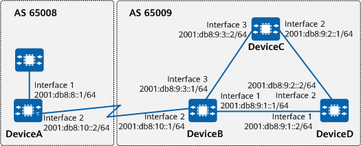

Example for Configuring Basic BGP4+ Functions
Networking Requirements
On the network shown in Figure 1, DeviceA is in AS 65008, and DeviceB, DeviceC, and DeviceD are in AS 65009. It is required that BGP4+ be used to exchange routing information between the ASs.

In this example, interface 1, interface 2, and interface 3 represent 10GE0/0/1, 10GE0/0/2, and 10GE0/0/3, respectively.

To complete the configuration, you need the following data:
Router IDs of DeviceA, DeviceB, DeviceC, and DeviceD
AS numbers of DeviceA, DeviceB, DeviceC, and DeviceD
Precautions
Note the following during the configuration:
- To improve security, you are advised to deploy BGP4+ security measures. For details, see "Configuring BGP4+ Authentication." Keychain authentication is used as an example. For details, see Example for Configuring Keychain Authentication for BGP4+.
Configuration Roadmap
The configuration roadmap is as follows:
Configure IBGP connections between DeviceB, DeviceC, and DeviceD.
Configure an EBGP connection between DeviceA and DeviceB.
Procedure
- Assign an IPv6 address to each interface involved. For detailed configurations, see Configuration Scripts.
- Configure IBGP connections.
# Configure DeviceB.
[DeviceB] bgp 65009 [DeviceB-bgp] router-id 2.2.2.2 [DeviceB-bgp] peer 2001:db8:9:1::2 as-number 65009 [DeviceB-bgp] peer 2001:db8:9:3::2 as-number 65009 [DeviceB-bgp] ipv6-family unicast [DeviceB-bgp-af-ipv6] peer 2001:db8:9:1::2 enable [DeviceB-bgp-af-ipv6] peer 2001:db8:9:3::2 enable [DeviceB-bgp-af-ipv6] network 2001:db8:9:1:: 64 [DeviceB-bgp-af-ipv6] network 2001:db8:9:3:: 64 [DeviceB-bgp-af-ipv6] quit [DeviceB-bgp] quit
# Configure DeviceC.
[DeviceC] bgp 65009 [DeviceC-bgp] router-id 3.3.3.3 [DeviceC-bgp] peer 2001:db8:9:3::1 as-number 65009 [DeviceC-bgp] peer 2001:db8:9:2::2 as-number 65009 [DeviceC-bgp] ipv6-family unicast [DeviceC-bgp-af-ipv6] peer 2001:db8:9:3::1 enable [DeviceC-bgp-af-ipv6] peer 2001:db8:9:2::2 enable [DeviceC-bgp-af-ipv6] network 2001:db8:9:3:: 64 [DeviceC-bgp-af-ipv6] network 2001:db8:9:2:: 64 [DeviceC-bgp-af-ipv6] quit [DeviceC-bgp] quit
# Configure DeviceD.
[DeviceD] bgp 65009 [DeviceD-bgp] router-id 4.4.4.4 [DeviceD-bgp] peer 2001:db8:9:1::1 as-number 65009 [DeviceD-bgp] peer 2001:db8:9:2::1 as-number 65009 [DeviceD-bgp] ipv6-family unicast [DeviceD-bgp-af-ipv6] peer 2001:db8:9:1::1 enable [DeviceD-bgp-af-ipv6] peer 2001:db8:9:2::1 enable [DeviceD-bgp-af-ipv6] network 2001:db8:9:2:: 64 [DeviceD-bgp-af-ipv6] network 2001:db8:9:1:: 64 [DeviceD-bgp-af-ipv6] quit [DeviceD-bgp] quit
- Configure an EBGP connection.
# Configure DeviceA.
[DeviceA] bgp 65008 [DeviceA-bgp] router-id 1.1.1.1 [DeviceA-bgp] peer 2001:db8:10::1 as-number 65009 [DeviceA-bgp] ipv6-family unicast [DeviceA-bgp-af-ipv6] peer 2001:db8:10::1 enable [DeviceA-bgp-af-ipv6] network 2001:db8:10:: 64 [DeviceA-bgp-af-ipv6] network 2001:db8:8:: 64 [DeviceA-bgp-af-ipv6] quit [DeviceA-bgp] quit
# Configure DeviceB.
[DeviceB] bgp 65009 [DeviceB-bgp] peer 2001:db8:10::2 as-number 65008 [DeviceB-bgp] ipv6-family unicast [DeviceB-bgp-af-ipv6] peer 2001:db8:10::2 enable [DeviceB-bgp-af-ipv6] network 2001:db8:10:: 64 [DeviceB-bgp-af-ipv6] quit [DeviceB-bgp] quit
Verifying the Configuration
# Check the status of BGP4+ connections.
[DeviceB] display bgp ipv6 peer BGP local router ID : 2.2.2.2 Local AS number : 65009 Total number of peers : 3 Peers in established state : 3 Peer V AS MsgRcvd MsgSent OutQ Up/Down State PrefRcv 2001:DB8:9:1::2 4 65009 8 9 0 00:05:37 Established 2 2001:DB8:9:3::2 4 65009 2 2 0 00:00:09 Established 2 2001:DB8:10::2 4 65008 9 7 0 00:05:38 Established 2
The preceding command output shows that BGP4+ connections have been established between DeviceB and other devices.
# Check the routing table of DeviceA.
[DeviceA] display bgp ipv6 routing-table
BGP Local router ID is 1.1.1.1
Status codes: * - valid, > - best, d - damped, x - best external, a - add path,
h - history, i - internal, s - suppressed, S - Stale
Origin : i - IGP, e - EGP, ? - incomplete
RPKI validation codes: V - valid, I - invalid, N - not-found
Total Number of Routes: 6
*> Network : 2001:DB8:8:: PrefixLen : 64
NextHop : :: LocPrf :
MED : 0 PrefVal : 0
Label :
Path/Ogn : i
*> Network : 2001:DB8:9:1:: PrefixLen : 64
NextHop : 2001:DB8:10::1 LocPrf :
MED : 0 PrefVal : 0
Label :
Path/Ogn : 65009 i
*> Network : 2001:DB8:9:2:: PrefixLen : 64
NextHop : 2001:DB8:10::1 LocPrf :
MED : PrefVal : 0
Label :
Path/Ogn : 65009 i
*> Network : 2001:DB8:9:3:: PrefixLen : 64
NextHop : 2001:DB8:10::1 LocPrf :
MED : 0 PrefVal : 0
Label :
Path/Ogn : 65009 i
*> Network : 2001:DB8:10:: PrefixLen : 64
NextHop : :: LocPrf :
MED : 0 PrefVal : 0
Label :
Path/Ogn : i
*
NextHop : 2001:DB8:10::1 LocPrf :
MED : 0 PrefVal : 0
Label :
Path/Ogn : 65009 i
The preceding command output shows that DeviceA has learned routes from its peer in AS 65009. Routing information can be exchanged between AS 65008 and AS 65009.
Configuration Scripts
DeviceA
# sysname DeviceA # interface 10GE0/0/1 ipv6 enable ipv6 address 2001:DB8:8::1/64 # interface 10GE0/0/2 ipv6 enable ipv6 address 2001:DB8:10::2/64 # bgp 65008 router-id 1.1.1.1 peer 2001:DB8:10::1 as-number 65009 # ipv4-family unicast # ipv6-family unicast network 2001:DB8:8:: 64 network 2001:DB8:10:: 64 peer 2001:DB8:10::1 enable # return
- DeviceB
# sysname DeviceB # interface 10GE0/0/1 ipv6 enable ipv6 address 2001:DB8:9:1::1/64 # interface 10GE0/0/2 ipv6 enable ipv6 address 2001:DB8:10::1/64 # interface 10GE0/0/3 ipv6 enable ipv6 address 2001:DB8:9:3::1/64 # bgp 65009 router-id 2.2.2.2 peer 2001:DB8:9:1::2 as-number 65009 peer 2001:DB8:9:3::2 as-number 65009 peer 2001:DB8:10::2 as-number 65008 # ipv4-family unicast # ipv6-family unicast network 2001:DB8:9:1:: 64 network 2001:DB8:9:3:: 64 network 2001:DB8:10:: 64 peer 2001:DB8:9:1::2 enable peer 2001:DB8:9:3::2 enable peer 2001:DB8:10::2 enable # return
DeviceC
# sysname DeviceC # interface 10GE0/0/2 ipv6 enable ipv6 address 2001:DB8:9:2::1/64 # interface 10GE0/0/3 ipv6 enable ipv6 address 2001:DB8:9:3::2/64 # bgp 65009 router-id 3.3.3.3 peer 2001:DB8:9:2::2 as-number 65009 peer 2001:DB8:9:3::1 as-number 65009 # ipv4-family unicast # ipv6-family unicast network 2001:DB8:9:2:: 64 network 2001:DB8:9:3:: 64 peer 2001:DB8:9:2::2 enable peer 2001:DB8:9:3::1 enable # return
DeviceD
# sysname DeviceD # interface 10GE0/0/1 ipv6 enable ipv6 address 2001:DB8:9:1::2/64 # interface 10GE0/0/2 ipv6 enable ipv6 address 2001:DB8:9:2::2/64 # bgp 65009 router-id 4.4.4.4 peer 2001:DB8:9:1::1 as-number 65009 peer 2001:DB8:9:2::1 as-number 65009 # ipv4-family unicast # ipv6-family unicast network 2001:DB8:9:1:: 64 network 2001:DB8:9:2:: 64 peer 2001:DB8:9:1::1 enable peer 2001:DB8:9:2::1 enable # return